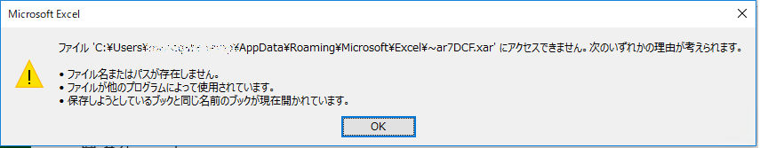
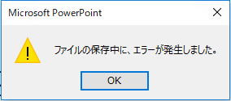
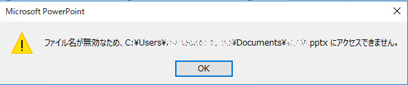

こんにちは、Office サポート チームの永田です。
クイック実行版 Office のバージョン 2003 でタイトルの通りの事象が発生することがあります。
情報に更新があり次第、このブログ記事は更新される予定です。
2020/5/12 Update
Office 365 月次チャネル向けに修正を公開しました。バージョン 2004 で本事象は解消しております。
事象
IRM 保護とパスワード保護を同時に付与したファイルを保存できない。
再現手順
※Excel での例
- RMS を利用可能な環境で、Excel を起動し、新規ブックを追加する
- [ファイル] - [情報] - [ブックの保護] - [パスワードを使用して暗号化] を選択する
- パスワード保護をかける
- [ファイル] - [情報] - [ブックの保護] - [アクセスの制限] - [アクセス制限あり] - [このブックへのアクセスを制限する] チェック ON にする
- ファイルを編集して保存ダイアログから保存ボタンをクリックする
結果
以下のメッセージが表示されて保存できない。

ファイル ‘<パス>¥***‘ にアクセスできません。次のいずれかの理由が考えられます。
- ファイル名またはパスが存在しません。
- ファイルが他のプログラムによって使用されています。
- 保存しようとしているブックと同じ名前のブックが現在開かれています。
影響範囲
クイック実行版 Office バージョン 2003 (12624.20320 以降) の、IRM を利用可能なエディションの Excel、PowerPoint、Word で発生します。
2020/5/12 Update
Office 365 月次チャネル向けに修正を公開しました。バージョン 2004 で本事象は解消しております。
VL 版 Office 2016 (MSI 版) および、VL 版 Office 2019 (最新でバージョン 1808) では、いずれも発生しません。
表示されるエラーメッセージや保存時の動作は、PowerPoint と Word ではそれぞれ以下のようになります。
PowerPoint
保存ボタンをクリックすると以下のメッセージが表示される。

ファイルの保存中に、エラーが発生しました。

ファイル名が無効なため、<パス>\***.pptx にアクセスできません。
Word
保存ボタンをクリックしてもエラーが出ないが、保存ダイアログが繰り返し表示され、保存処理は完了しない。
対応状況
2020/5/12 Update
バージョン 2004 で本事象は解消しました。
これは Office 製品の好ましくない動作であると判断しております。マイクロソフトでは現時点でこの問題を調査中です。
回避策
現段階での回避策としては、誠に恐れ入りますが、以下の方法を検討ください。
- 2020/5/12 Update
バージョン 2004 を利用する パスワード保護と IRM 保護を併用しないよう運用する- バージョン 2002 までを利用する
補足
既にバージョン 2003 を利用している端末で、バージョン 2002 の Office を上書きインストールする方法をご紹介します。
具体的には、ODT の Configuration.xml で、Updates 要素に Version を指定して、Setup.exe /configure をクライアントで実行する操作となります。
インターネット接続可能な環境の場合、以下手順となります。
1. 以下ウェブサイトから Office 展開ツール (ODT) を取得し、解凍する
https://www.microsoft.com/en-us/download/details.aspx?id=49117
2. 以下の内容で、Configuration.xml を作成する
※ OfficeClientEdition の 64 または 32 、ならびに Product ID や Language は既存の Office に合わせてください。
1 | <Configuration> |
3. クライアントで以下コマンドを実行する
Setup.exe /configure Configuration.xml
4. インターネットから Office インストールソースが自動的にダウンロードされ、セットアップが開始されるため完了するのを待つ
資料
今回の投稿は以上です。
本情報の内容 (添付文書、リンク先などを含む) は、作成日時点でのものであり、予告なく変更される場合があります。